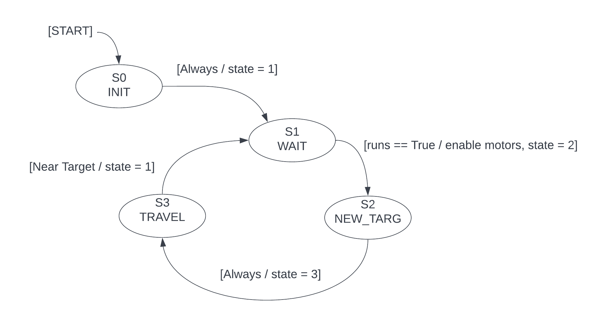

Motor Task¶
The motor task takes angle values out of a queue and drives the motors to those positions. A finite state diagram of the system is shown below.
State 0: INIT - Creates the pin, timer, SPI, motor, and servo objects. Motors are calibrated and the servo is set to the ‘down’ position.
State 1: WAIT - Disables the motors by default, until the shared variable run is set to
True. Then the motors are enabled and the code moves on to the next state.
State 2: NEW_TARG - Pulls the next target angles from the queue and assigns one to each motor. The pen position for that point is sent to the servo. Immediately continues to State 3.
State 3: TRAVEL - Waits until both motors are within a certain threshold from their target values, then returns to State 1 to start the process over.
Related Classes